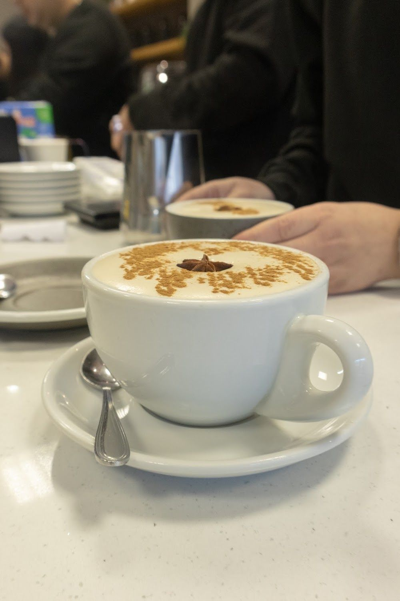
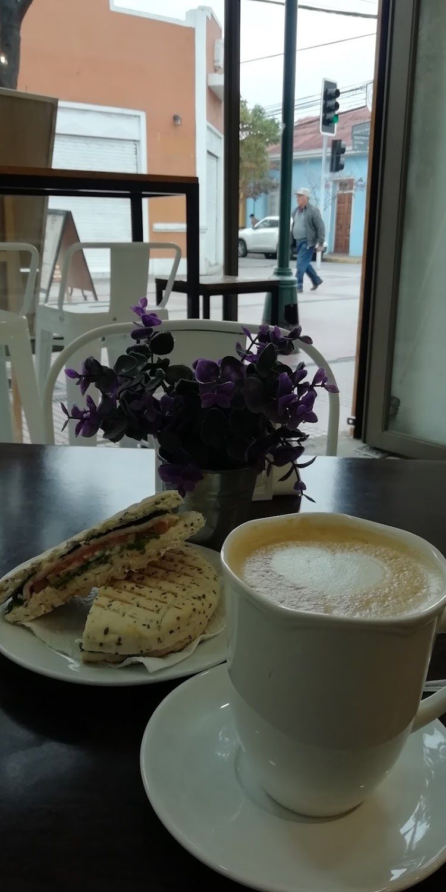
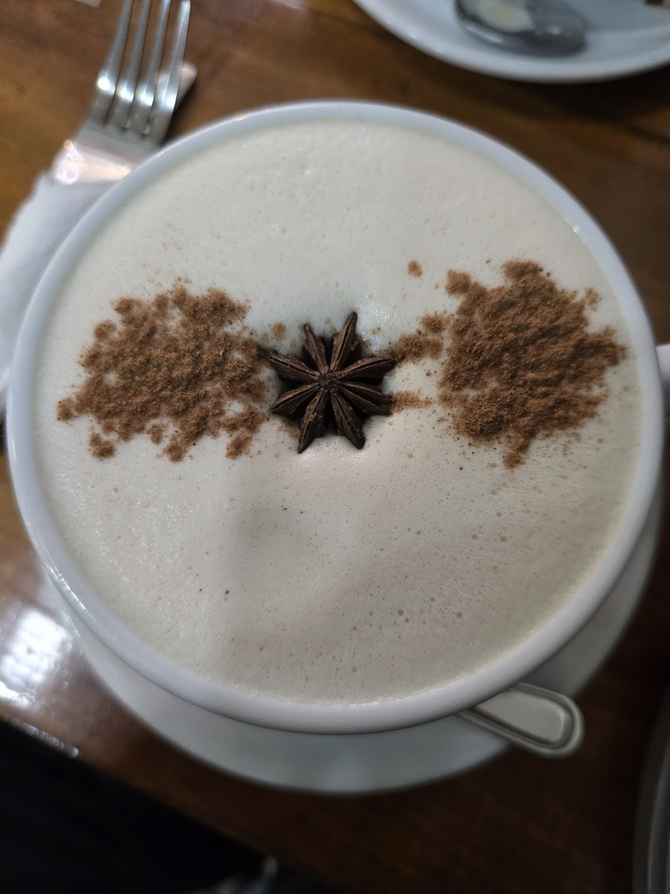

Café de especialidad
Filtrados por origen, dirty chai, matcha y un irlandés con baileys. Toda la carta de bebidas está acá con su precio real.
Ver la carta →Gamero 440 · Centro de Rancagua
Café de especialidad en pleno centro, con la cocina andando desde temprano: filtrados por origen, tostadas con huevo pochado y pastelería propia.

Lunes a viernes de 07:30 a 18:30 · sábado de 10:00 a 14:00
Filtrados por origen, dirty chai, matcha y un irlandés con baileys. Toda la carta de bebidas está acá con su precio real.
Ver la carta →Tostadas de palta con huevo pochado, omelettes y sándwiches. Abierto desde las 7:30, que en el centro no es poca cosa.
Conocer el local →Se puede tomar acá, pedir para llevar o recibirlo en casa. Lo declara su propia ficha de Google.
Visítanos →Nosotros
No lo decimos nosotros: lo cuenta un cliente en su reseña de Google.
“Los conoci cuando estaban en el local chiquito que estaba al frente de donde estan ahora. (…) El local esta precioso, es grande, bonita decoración.” Jorge Reveco, en Google
Hoy el salón es amplio, luminoso y minimalista, con el wordmark pintado sobre un arco que se volvió la firma del lugar.

Café de especialidad —el Espresso Tonic y el Chai Latte aparecen por nombre—, sándwiches y postres, ambiente cálido y agradable, servicio atento y rápido, precios razonables para la calidad y el horario de apertura temprano.
Leer las reseñas →


Todas las fotos son del propio local, de su ficha de Google Maps.
Carta
Los 20 valores de abajo están transcritos de la foto de su carta impresa, publicada por el propio local en su ficha de Google.
30 a 40 ml
Espresso doble + 60 ml de agua
Espresso doble + 200 ml de agua
Espresso doble + 30 ml de leche

Espresso simple + 200 ml de leche

Espresso doble + 300 ml de leche
Espresso doble + 120 ml de leche

Espresso simple + 300 ml de leche
Espresso simple + syrup de sabor + 270 ml de leche
Espresso doble + chocolate + leche

Concentrado de té chai + leche + shot de espresso
Espresso doble + shot de baileys + leche
Concentrado de té chai + leche
Chocolate caliente + leche
Chocolate caliente espeso
Concentrado de té matcha + leche
Ceylán tradicional · Chai · Magia azul · Menta manzanilla · Relax
Ceylán tradicional · Chai
Syrup de sabor / Espresso / Cambio a bebida vegetal / Hielo
Con semillas y encurtido de betarraga.
Servido con palta y semillas.
Nombrados por sus clientes en las reseñas.
Cheesecakes y tortas en vitrina.
Visto en sus fotos, acompañando el café helado.
Nombrados en la reseña de Jorge Reveco.
Precios transcritos de fotos/carta.jpg, foto de su carta impresa subida por el local. Conviene confirmarlos al pedir.
Reseñas
Reales, copiadas tal cual de su ficha de Google Maps.
★★★★★
Un lugar muy agradable y cálido desde el primer momento. El ambiente es perfecto para conversar y relajarse, y destaca la preocupación de todo el equipo por brindar una atención realmente 10/10.
★★★★★
Con mi pareja buscábamos un lugar donde tomar desayuno por el centro de Rancagua un día sábado y, por fortuna, nos topamos con este café. La comida es deliciosa, la atención es muy buena y el ambiente es espectacular: muy minimalista. Realmente disfruté la experiencia. Lo recomiendo completamente 👍
★★★★★
Los conoci cuando estaban en el local chiquito que estaba al frente de donde estan ahora. Super bueno el cafecito pedí unos alfajores que estaban tambien muy buenos. El local esta precioso, es grande, bonita decoración.
Redes
Sólo lo verificado. Ningún perfil inventado.
Visítanos
Gamero 440
Rancagua, Región de O'Higgins
Plus Code R7G5+X7
Lunes a viernes de 07:30 a 18:30
Horario de su ficha de Google Maps, 15-09-2026.
Google no publica un teléfono para este local. Lo más directo hoy es pasar por Gamero 440 o escribir por su ficha de Maps.
Consumo en el lugar · Para llevar · Entrega a domicilio
Servicios declarados en su ficha de Google.
$5.000 – $10.000
Estimación de Google, informada por 79 clientes.